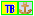


Onglet Bloc de texte (B)
Les blocs de texte sont des zones de texte libres que vous placez n'importe où sur la page, indépendamment du tableau – par exemple pour un titre, une remarque ou un pied de page.
Placer et modifier un bloc de texte
- Cliquez dans le concepteur à l'endroit où le bloc doit apparaître.
- Cliquez sur TBA.
- Double-cliquez sur le bloc (ou appuyez sur Entrée / F2) pour saisir le texte.
- Faites glisser le bloc pour le déplacer. Faites glisser le coin inférieur droit pour le redimensionner.
- Le petit bouton en haut à gauche d'un bloc sélectionné ouvre directement cet onglet.
Attention : la plupart des boutons de cet onglet ne sont actifs que si un bloc de texte est sélectionné.
Ajouter, supprimer et positionner
| Bouton | Nom | Que fait-il ? |
|---|---|---|
| Ajouter un bloc | Crée un nouveau bloc de texte à l'endroit où vous avez cliqué en dernier dans le concepteur. | |
| Supprimer le bloc | Supprime le bloc sélectionné. Fonctionne aussi avec Suppr. | |
| X | Move X | Position horizontale du bloc en mm, mesurée depuis le zéro des règles. |
| Y | Move Y | Position verticale du bloc en mm. |
Move X et Move Y suivent le mouvement quand vous faites glisser le bloc avec la souris. Vous pouvez donc placer un bloc grossièrement, puis l'ajuster au millimètre près.
Mise en forme du texte
| Bouton | Nom | Que fait-il ? |
|---|---|---|
| Gras | Gras activé ou désactivé. | |
| Italique | Italique activé ou désactivé. | |
| Souligné | Soulignement activé ou désactivé. | |
| Aligner à gauche | Texte à gauche dans le bloc. | |
| Centrer | Texte au milieu. | |
| Aligner à droite | Texte à droite dans le bloc. | |
| ■ | Couleur du texte | Couleur du texte. |
| ⇅ | Taille de police | Taille du texte (8 à 20). |
Si vous êtes en train de modifier le texte et qu'une partie est sélectionnée, le gras, l'italique et le souligné ne s'appliquent qu'à cette partie. Sans sélection, ils s'appliquent à tout le bloc.
Hyperliens
| Bouton | Nom | Que fait-il ? |
|---|---|---|
 | Créer un hyperlien | Transforme le texte sélectionné en hyperlien. Sélectionnez d'abord le morceau de texte qui doit devenir un lien. |
| Supprimer l'hyperlien | Supprime l'hyperlien ; le texte reste. |
Fond et bordure
| Bouton | Nom | Que fait-il ? |
|---|---|---|
 | Transparent | Active ou désactive un fond transparent pour le bloc. |
| ■ | Couleur du bloc | Couleur de fond du bloc (s'il n'est pas transparent). |
| ⇅ | Épaisseur de bordure | Épaisseur de la bordure, de 1 à 5. |
| ─ | Style de bordure | Aucune, pleine, tirets, pointillés ou double. |
 Onglet Cellule
Onglet Cellule Onglet Paramètres →
Onglet Paramètres →